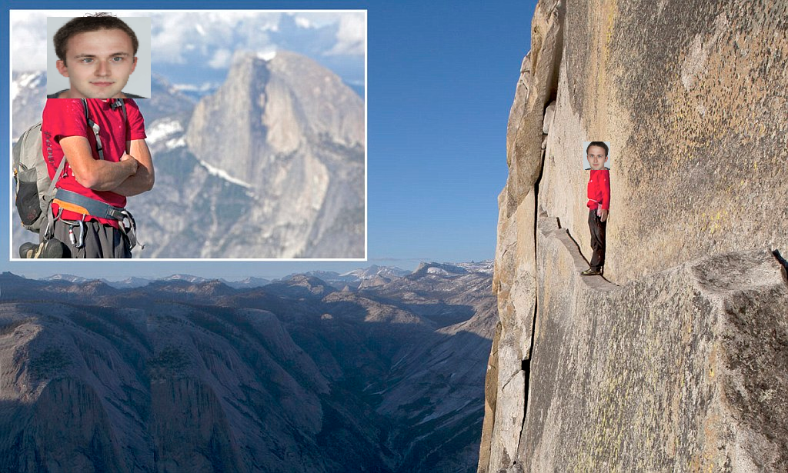

It is called rock climbing.
While the concept of rocks and differences in height might seem novel to the dutch, these are in fact things that exist. If you combine both of those concepts, and you try and get up that combined concept, then you get rock climbing.
It is a bit like the dutch sport Fierljeppen, except instead of a ditch, to get over, you have a rock, to get onto, and instead of a pole, you use your hands.
Anyways, this here is a picture of someone defenitely me doing the hardest boulder in the world first try:
Here is another picture, this time it is me doing the hardest sport route in the world, first try and also as the first person ever. Trust me.

I also starred in a award winning film about free soloing El Capitan in America, here is a promo picture of that event that happened.
